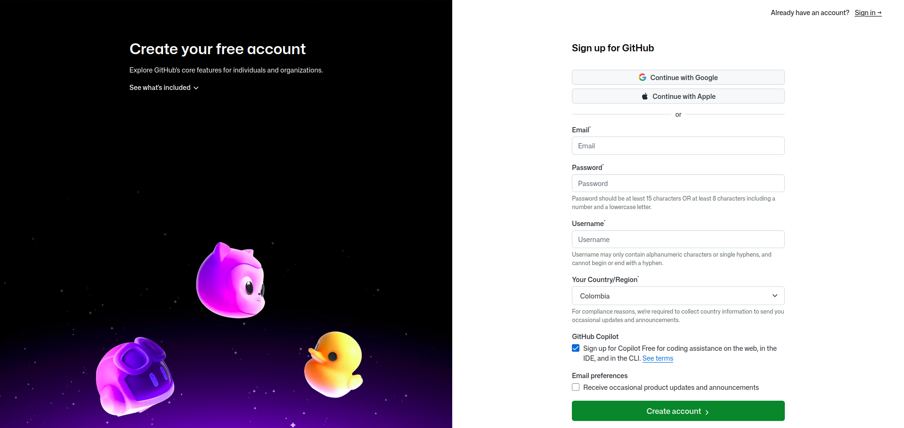
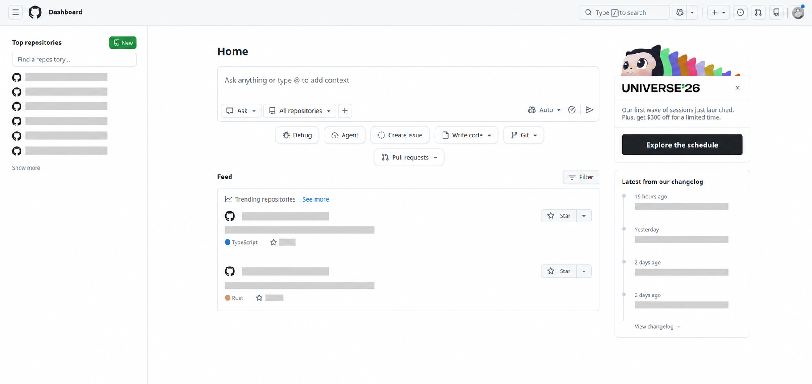
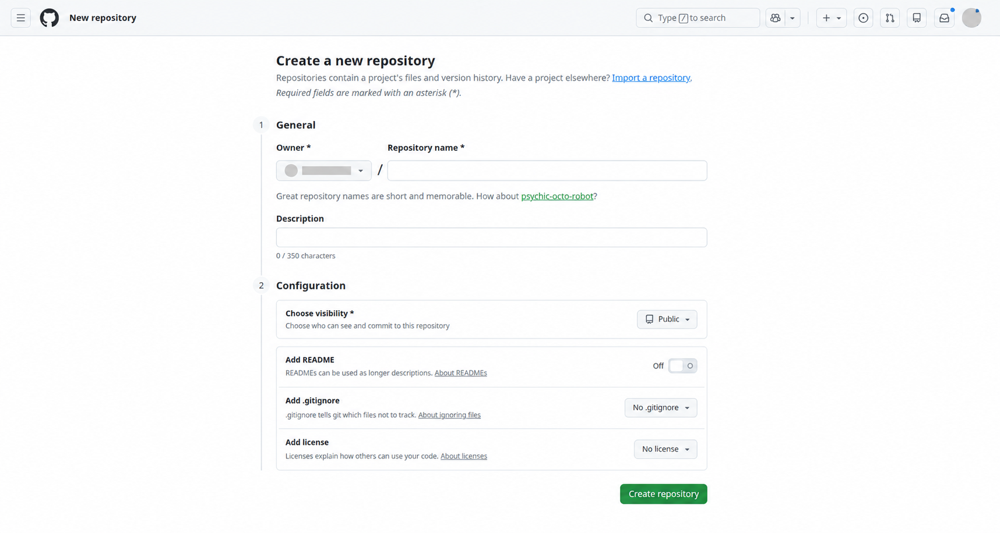
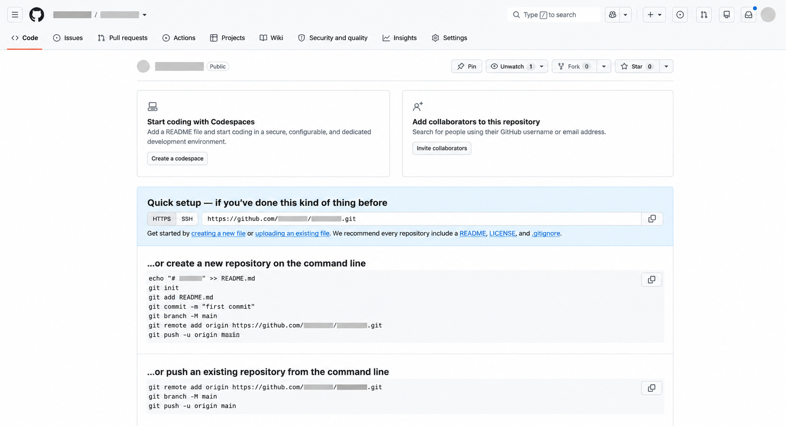

Bienvenidos a la última sección de este catálogo. En esta hablaremos de una web conocida como la red social de los programadores, llamada GitHub. De esta ya se había mencionado brevemente en la sección de Git, exactamente en los pasos que se debían llevar a cabo para subir nuestro proyecto al repositorio creado en GitHub. En este apartado se explicará más a fondo la página misma y cómo crear un repositorio desde cero.
Lo primero que debemos hacer es entrar a la página de inicio de GitHub, a través del enlace superior. Una vez allí, ingresaremos a la vista de inicio de sesión. Abajo encontraremos la opción de crear cuenta. Aquí dependerá de cómo decidamos registrarnos: ya sea mediante nuestra cuenta de Google, con una cuenta de Apple o realizando un registro sencillo con nuestras credenciales (correo y contraseña). Lo importante es crear una cuenta correctamente. Una vez completado este proceso, se abrirá la vista de nuestro perfil con el usuario creado, y desde allí buscaremos la opción para crear un repositorio para nuestro proyecto por primera vez.

Para crear nuestro repositorio, debemos dar clic en el botón New, ubicado en la esquina superior izquierda. Al hacerlo, se abrirá un apartado donde ingresaremos el nombre de nuestro repositorio, una descripción (opcional) y definiremos si será público —visible para todo el mundo— o privado, en cuyo caso solo podrá verlo el usuario que lo crea. Este punto queda bajo decisión personal. Una vez que tengamos todo configurado, damos clic en Create repository y nuestro repositorio quedará listo para su uso.


Una vez creado el repositorio, ingresaremos en él y se nos mostrarán ciertos comandos importantes que son necesarios a la hora de subir nuestro proyecto al repositorio creado. Estos mismos comandos se explican a detalle en la guía de la sección Git, donde se presenta paso a paso cómo deben ejecutarse para lograr el objetivo mencionado. Por esta razón, es de suma importancia leer la sección Git después de esta, ya que permitirá comprender mejor cómo proceder con cada proceso presentado aquí.

agradesco mucho la lectura de esta seccion cada conocimiento que implante en las demas secciones es de suma importancia a la hora de querer aprender mas sobre esta area para elevar mas nuestra capacidad logica.